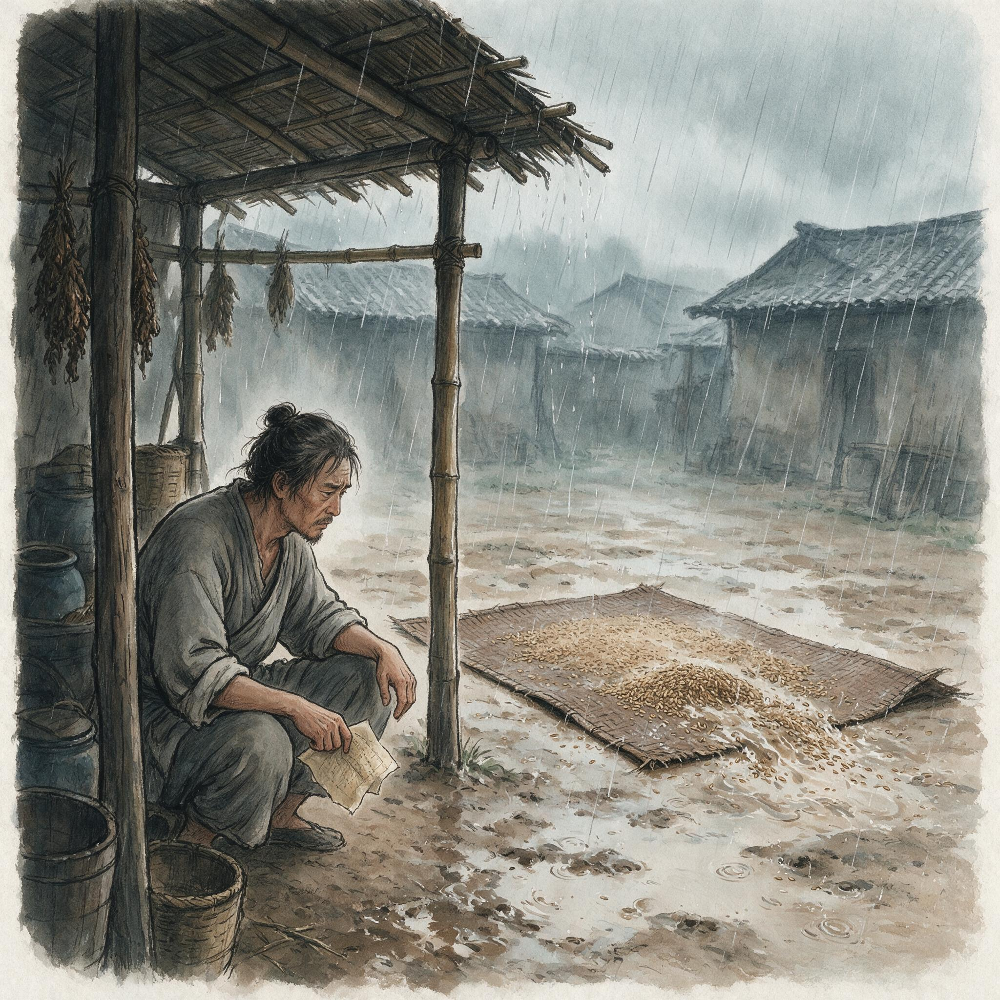

第 24 章
归途尽头无岸无声
马老四开始教邻居家孩子认字，是在他到孟帕辽的第十七个旱季。那孩子八岁，是摊贩阿郑的独子，每天傍晚会端着一碗饭穿过两排竹棚走过来。马老四没有课本，也没有黑板。
他用一根削尖的竹片在泥地上划出横、竖、撇、捺，然后指着那些笔画念出对应的读音。孩子跟着念，声音很轻，像是怕惊动什么。有时候马老四会在泥地上写出一个完整的字——“中”，或者“军”，或者“路”——但他从不解释这些字连起来是什么意思。孩子问过一次，马老四只是把竹片翻过来，用另一头把地上的字迹抹平，然后重新开始写笔画。这件事在孟帕辽的集市上传开之后，又有两三个家庭把孩子送过来。
马老四不收钱，也不要东西。他只是在每天收工之后，坐在竹棚前面的空地上，用那根竹片在泥地上写字。孩子们蹲成一圈，跟着他念。

泰缅边境山区雨季中的前士兵
AI 生成插图，非史实影像。
没有人问他的来历。在这个位于泰缅边境丛林深处的集市里，问一个人的来历是不合规矩的——这里的人大多有不愿意被问到的事情。那是1958年。距离马老四从野人山走出来，已经过去了十六年。
同一年的雨季，在缅甸掸邦北部一个叫勐古的小镇，一个名叫刘德明的中年人走进当地移民局办事处，申请办理外侨登记证。
他穿着一件洗得发白的棉布衬衫，袖口磨出了线头，但扣子系得整整齐齐。办事员递给他一张表格，上面需要填写姓名、出生日期、出生地、国籍、入境日期和入境前的居住地址。刘德明填了前四项——“刘德明”“1919年”“四川万县”“中国”——然后在“入境日期”那一栏停下了笔。他坐在办事处的木凳上，把钢笔帽拧开又拧上，反复了几次。
办事员等得不耐烦，用缅语催了一句。刘德明抬起头，用带着四川口音的缅语回答：我不记得具体日期了。他不是不记得。他记得很清楚：1942年5月23日，他跟着第五军军部从野人山走出来，跨过一条不知名的溪流进入缅甸境内。那一天下着雨，他的绑腿散了，左脚的草鞋陷在泥里拔不出来，他索性光着一只脚走完了最后一段路。但他不能把这个日期写在表格上。因为一旦写下入境日期，下一栏“入境事由”就必须填写。
而他没有办法用缅甸政府能够接受的语言，解释自己为什么会出现在这片土地上。他最后在“入境日期”一栏写了“1942年”，在“入境事由”一栏写了“经商”。办事员看了一眼，没有追问。表格被收进一个铁皮柜子里，和其他几千份外侨登记表放在一起。刘德明拿到了外侨登记证，上面盖着一个模糊的紫色印章。他把证件折好放进衬衫口袋，走出办事处，沿着勐古镇唯一的主街往回走。
街边有人在卖油炸的香蕉片，油锅里的热气在潮湿的空气中散不开，糊成白蒙蒙的一团。他在油锅前面站了一会儿，然后继续走。那张外侨登记证后来被他保存了很多年。证件上的字迹慢慢褪色，纸张的边缘开始发脆。他从来没有用过它——既没有用它申请过旅行许可，也没有用它换过任何救济物资。
他只是把它放在一个铁盒子里，和几枚已经生锈的领章放在一起。领章上的番号还能辨认：第五军第二百师。这两个人——马老四和刘德明——彼此不认识。他们一个在泰缅边境的集市卖竹编，一个在掸邦北部的小镇做杂货铺伙计。
但他们共享着同一种处境：他们都是中国远征军的幸存者，都在战争结束后留在了缅甸和泰国的边陲地带，都失去了能够证明自己从军经历的完整档案，也都在一个正在急剧变化的东南亚政治格局中，逐渐变成了无法归类的人。这种无法归类的状态，不是某一天突然发生的。它是从1945年战争结束开始，一点一点积累起来的。
最初是等待——等待船只、等待命令、等待国民政府派来的联络官。然后是犹豫——国内的消息断断续续传来，先是国共内战全面爆发，然后是1949年的政权更替。再然后是沉默——那些留在印度蓝姆伽和缅甸丛林里的士兵发现，曾经指挥他们的军官一个接一个地走了，有的去了台湾，有的去了美国，有的回到了大陆但从此不再提起远征军的经历。
留在原地的人，渐渐变成了没有番号的散兵，没有隶属关系的滞留者，没有明确法律地位的边缘人。这个过程缓慢而不可逆转，像热带地区的土壤侵蚀——表面看起来什么都没有发生，但每一场雨都在带走一层泥土，直到某一天整个地基都空了。
1950年代初期的几年，是这种身份侵蚀加速的时期。新中国的成立意味着中国军队建制体系的彻底更替——人民解放军取代了国民革命军，新的番号体系覆盖了旧的序列，新的档案系统重写了军人的履历。
对于那些滞留海外的远征军士兵来说，这意味着一个根本性的断裂：他们不再被新中国承认为自身军队的一部分，也无法从已经退守台湾的旧政权获得有效的救济和证明。他们被同时隔绝于两个现代国家体系之外——既不是“解放军的退伍军人”，也不是“国军的有效在册人员”。他们变成了某种法律意义上的空白。这种空白在行政层面表现得最为具体。
1950年代中期以后，一部分滞留人员试图通过东南亚华人网络私下返回中国大陆西南省份。他们通常的路线是：先从缅甸或泰国边境进入老挝或越南的华人聚居区，再通过当地的商会或同乡会与国内取得联系，最后以“归国华侨”的身份申请入境。这条路线耗时漫长，费用高昂，而且每一个环节都充满了不确定性。
但最困难的不是路途本身——最困难的是回到国内之后面对的那一套审查程序。回国的人需要填写一份详细的历史背景登记表。表格上的问题包括：何时何地离开中国？离开的原因是什么？
在国外期间从事何种职业？是否参加过任何军队或政治组织？如果参加过军队，部队番号是什么？指挥官是谁？何时何地退役？退役证明文件在哪里？对于远征军士兵来说，这张表格上的每一个问题都是陷阱。
“离开中国的原因”——他们是因为执行国民政府的军事命令而出国作战的，但在1950年代的政治语境中，“国民政府”这四个字本身就是问题。
“是否参加过军队”——他们当然参加过，而且参加的是被盟军公认为战斗力最强的步兵部队之一，但这支部队的番号属于旧政权序列，在新的档案系统中找不到对应记录。
“退役证明文件在哪里”——大多数人的证件在野人山撤退时丢失了，或者在印度整训期间被统一收缴后没有发还，或者在战后混乱中被遗落在某个再也找不到的仓库里。表格上那些空白栏，构成了一个无法跨越的制度性鸿沟。
一个士兵可以详细描述他在同古的巷战中如何与日军拼刺刀，在仁安羌的油田里如何掩护英军撤退，在密支那的沼泽里如何拖着重机枪匍匐前进——但这些叙述无法填入表格的方框里。表格要求的是文件编号、签发机关、官方印章。而这些东西，他们一样都没有。
于是出现了一种荒诞的处境：一个人越是诚实地说出自己的经历，他的表格就越填不完；而表格填不完，他的身份审查就越通不过；身份审查通不过，他就无法获得合法的户籍登记、粮食配给和工作安排。有些人最终选择了隐瞒——他们在表格上写“出国经商”，写“战乱流落”，写任何能够被接受的理由，然后把远征军的经历埋进记忆的最深处，不再对任何人提起。那些没有选择回国的人，则走上了另一条路。
他们留在了缅甸、泰国和印度的华人移民社会中，以商贩、教师、翻译、会计等身份谋生。这条路并不比回国更容易——它意味着在一个陌生的国度里从头开始建立生活，学习新的语言，适应新的社会规则，在异族文化的缝隙中寻找立足之地。
但这条路至少有一个好处：不需要填表格。不需要填表格，意味着不需要解释自己的过去。不需要解释过去，意味着可以把远征军的经历变成一个沉默的秘密。
于是很多人在当地娶妻生子，开起了小店铺或者做起了边境贸易，逐渐融入当地的华人社区。他们的孩子出生在仰光、曼德勒、清迈或者加尔各答，说缅语、泰语或者印地语，不知道父亲曾经在同古城头拼过刺刀，也不知道母亲跟随部队走过野人山。远征军的经历变成了家族沉默的一页——不是刻意隐瞒，而是无从说起。这种沉默不是个体的选择，而是结构性的结果。
一个在曼德勒开杂货铺的前远征军士兵，要向谁讲述他在兰姆伽受训的经历？他的缅甸邻居不知道兰姆伽在哪里，也不关心中国军队在缅甸打过什么仗。他的顾客只关心大米的价格和肥皂的存货。他的孩子在学校里学的是缅甸历史和地理，课本上提到中国远征军的部分只有寥寥几行字，而且是从英军视角写的。
在这个语境中，“我曾经是远征军士兵”这句话没有任何社会意义——它既不能带来尊重，也不能换来实际利益，反而可能引发不必要的麻烦。于是这句话就不被说出了。一年，两年，十年，二十年，直到说话的人自己也觉得那段经历像一场过于遥远的梦，模糊得无法确定是否真的发生过。
而那些终老于泰北美斯乐等地的人，处境更加复杂。美斯乐是1950年代以后形成的华人聚居区，居民大多是旧政权军队的残部和他们的眷属。这些人被泰国政府安置在北部山区，名义上是“难民”，实际上是作为边境防御力量的一部分来使用的——他们被部署在泰缅边境的敏感地带，协助泰国政府防范缅甸境内武装势力的渗透。
作为交换，他们获得了有限的居留权，但始终没有获得完整的公民身份。在国际人道主义援助的框架内，美斯乐的居民被归类为“难民”或“前国民党军眷属”。联合国难民署和其他国际组织向他们提供食品、药品和基本生活物资，援助清单上的项目包括大米、食用油、蚊帐、奎宁片和旧衣物。
这些援助物资用麻袋装着，上面印着英文和法文的标识，从曼谷运到清迈再转运到山区。分发物资的时候，人们排着队领取自己的份额，在登记表上按下手印。登记表上的类别栏里，从来没有出现过“中国远征军老兵”这一项。这就是历史反讽的核心所在：那些在战场上被盟军公认为世界最优秀的步兵之一的中国士兵，在战后的人道主义援助体系中，不被视为为盟军胜利付出过重大牺牲的二战老兵。
他们被归入一个完全不同的类别——“难民”“前军眷”“无国籍者”——这些类别强调的是他们的困境和依附性，而不是他们的贡献和牺牲。援助是基于怜悯，而不是基于承认。这种分类上的错位，不是偶然的行政疏忽。它是战后国际秩序重组过程中一系列政治选择的必然结果。1945年以后，二战老兵的认定和抚恤成为各国政府的重要事务——美国的《退伍军人权利法案》、英国的退伍军人安置计划、苏联的英雄称号体系，都在不同的制度框架内确认了士兵的贡献和国家的义务。
但这些制度运作的前提，是一个稳定的国家认同和一套连续的档案系统。对于那些滞留海外的远征军士兵来说，这两个前提都不存在。他们的国家认同在1949年以后被切断了——新中国的军队序列里没有他们的位置，旧政权的抚恤体系无法延伸到缅甸和泰国的丛林里。他们的档案系统在战争和迁徙中被打碎了——入伍登记表留在某个被炸毁的师部里，津贴领取卡在野人山的泥泞中腐烂了，行军命令的残片被雨水浸泡得字迹模糊。
没有档案，就无法证明服役经历；无法证明服役经历，就无法进入任何国家的退伍军人保障体系；无法进入保障体系，就只能以“难民”的身份接受人道主义援助——这个逻辑链条环环相扣，每一个环节都在把远征军士兵推向更加边缘的位置。而那些试图打破这个链条的努力，往往以失败告终。1960年代初期，缅甸政府开始对境内滞留的外国武装人员进行清剿和遣返。
这一行动的背景是缅甸国内政治的变化——1962年奈温发动政变上台后，推行更加激进的民族主义政策，对外国势力在缅甸境内的存在采取了更加强硬的立场。
清剿的目标包括各种武装团体，其中也包括那些在掸邦和克钦邦丛林里生活了十几年的远征军残部。清剿行动的具体过程很少被公开记录。能够确认的是，一些聚居点被摧毁了，储存在竹棚里的粮食和药品被没收，少数人被抓捕后关进了移民拘留中心。更多的人则在清剿开始之前就得到了消息，提前撤离到更深的丛林里或者越境进入泰国。
撤离是仓促的——他们只来得及带走随身的衣物和少量食物，那些保存了多年的证件、照片、信件和纪念品，大部分被遗留在原地，后来被付之一炬。马老四的油布包裹就是在这样一次撤离中丢失的。那是1963年的事情，一队缅甸政府军士兵突然出现在孟帕辽集市附近，要求所有没有合法居留证件的外国人立即到镇上登记。马老四听到消息的时候正在编竹筐，他把手里的竹篾放下，走进竹棚去拿那个油布包裹。
但时间来不及了——外面已经有人在喊，说军队正在挨家挨户检查证件。他把油布包裹塞进竹箱最底层，用几件旧衣服盖上，然后从后门走出去，消失在集市后面那片竹林里。三个月后他回来的时候，竹棚已经被翻过了。竹箱倒在地上，里面的衣服散落一地，油布包裹不见了。他在泥地上坐了很久，然后站起来，把散落的衣服捡起来叠好放回竹箱里。
他没有再去找那个包裹。从那天起，能够证明马老四曾经是中国远征军第二百师上等兵的最后三张纸——入伍登记表、津贴领取卡、行军命令残片——彻底从这个世界上消失了。他本人还在，他的记忆还在，但那些能够把私人记忆转化为公共记录的物证没有了。从行政意义上说，“远征军士兵马老四”这个人已经不存在了。存在的只是一个没有合法身份的老挝裔竹编匠人，在泰缅边境的集市上靠手艺谋生。类似的故事在不同的时间和地点反复上演。
在掸邦的勐古，刘德明的铁盒子在一次火灾中烧毁了——他租住的木屋被一场意外的大火烧塌，铁盒子埋在瓦砾下面，找到的时候里面的纸张已经全部炭化，领章烧得只剩下两片变形的金属片。在泰国的美斯乐，一个姓周的炮兵老兵在1970年代的暴雨中失去了他保存多年的证件——山洪冲垮了他的房子，所有东西都被泥浆卷走了。
在印度的加尔各答，一个姓林的翻译把他在远征军时期的日记本锁在一个行李箱里，行李箱在他搬家时被搬运工弄丢了，再也没有找回来。这些看似偶然的丢失事件，累积起来构成了一个系统性的结果：远征军士兵的个人档案在战后几十年间几乎全部湮灭了。
幸存者的记忆还在，但记忆无法进入档案柜，无法填写表格上的空白栏，无法在行政程序中作为有效证据使用。当一个人无法用文件证明自己的过去时，他的过去就变成了一种纯粹的私人经验——真实，但不可验证；存在，但不被承认。这种状态持续了几十年。
从1950年代到1970年代，中国远征军滞留印缅泰人员所面临的核心困境，已经从军事调动和组织遣返变成了身份合法性的彻底湮灭。他们成为被两个时代夹在中间的无国籍者——“归途无岸”的实质，在于当祖国和战争双双远去后，归途本身也失去了可定义的对象。祖国远去了。1949年以后的中国进入了新的历史阶段，远征军所隶属的那个政权已经退出了大陆的政治版图。
新的国家机器在处理历史问题时，有自己的一套分类标准和政治逻辑——在这套标准和逻辑中，“远征军”是一个需要被谨慎对待的复杂话题，而不是一个可以简单确认和承认的身份标签。那些试图回国的人发现，他们要面对的不是欢迎的仪式，而是对历史背景的严格审查和因档案缺失而无法证明服役经历的窘困。
战争也远去了。二战胜利后的国际秩序重组，将老兵抚恤和荣誉认定纳入了各国国内事务的范畴。盟军体系中的其他国家——美国、英国、印度——各自处理本国退伍军人的安置问题，没有哪个国家愿意为别国的士兵承担抚恤责任。
远征军在战场上为盟军整体战略做出过贡献——他们在仁安羌解救了英军，在同古拖住了日军，在密支那打通了中印公路——但这些贡献被记入的是战役层面的战报，而不是战后抚恤层面的权利义务关系。当战争结束、盟军体系解散后，那些曾经并肩作战的中国士兵就不再是“盟友的战士”，而只是“滞留在外国领土上的前武装人员”。在这双重远去的夹缝中，“归途”这个词逐渐失去了它原本的含义。归途意味着有一个可以回去的地方和一个愿意接收的主体。
但对于1950年代以后的远征军滞留人员来说，这两个条件都不具备了。中国大陆不再是他们可以自由返回的家园——即使少数人通过私人网络成功回国，等待他们的也是漫长的审查和不确定的法律地位。
台湾虽然以“正统”自居，但实际能够提供的救济和安置能力极其有限，而且随着时间推移越来越流于形式。缅甸和泰国作为居住地，给予他们的只是有限的容忍——可以留下，但不要指望获得完整的公民权利；可以谋生，但不要指望被纳入社会保障体系。
这就是“无岸”的真正含义：不是地理上的无法抵达，而是行政、法律和政治意义上的无处可归。一个人可以在物理空间上穿越边界回到中国境内，但在法律身份上仍然是一个“无法证明服役经历的前武装人员”；一个人可以在缅甸或泰国生活几十年，但在社会身份上始终是一个“外侨”或“难民”。
地理归途、政治身份归途、记忆承认归途——三重归途叠加在一起，每一重都因结构性的原因无法抵达彼岸。这就是归途三叠的终极合拢：在足够长的时间尺度上，“无岸”从一种暂时的困境变成了一种永久的状态。而这种永久状态的最终完成，不是通过某个戏剧性的事件，而是通过时间的消磨。
1970年代以后，远征军滞留人员陆续进入老年。他们在热带边地度过了人生的大部分时间——种地、做小生意、教孩子认字、在集市上卖竹编。一些人攒够了钱，托人带信回老家打听亲人的下落；信寄出去之后往往石沉大海，或者退回时盖着“查无此人”的邮戳。
另一些人放弃了联系，把老家的地址写在一张纸上压在枕头底下，直到纸张发黄碎裂也没有再拿出来看。他们的子女长大成人，说着当地的语言，过着当地的生活，对父母的过去知之甚少或者毫无兴趣。有些子女模模糊糊地知道父亲“打过仗”，但具体在哪里打、和谁打、为什么打，一概不清楚。父亲不说，他们也不问——不是因为不想知道，而是因为这个问题在家庭生活的日常节奏中找不到合适的开口时机。等到某一天父亲去世了，这个问题就永远失去了被提出来的可能。
那些终老于异国的人，死后葬在当地华人公墓的边角位置。墓碑上刻着姓名、籍贯和生卒年份，有的还会刻上部队番号——“第五军第二百师”“新一军第三十八师”“第六军暂编第五十五师”——但这些番号对于扫墓的后代来说只是一串没有意义的数字和汉字组合。他们不知道第二百师在同古打了多久，不知道第三十八师在仁安羌救出了多少英军，不知道暂编第五十五师在野人山损失了多少人。
墓碑上的番号变成了纯粹的装饰性文字，像某种已经失传的文字的残片，形状还在，意义全无。而那些幸存下来的人——像马老四这样活到了1980年代甚至更晚的人——则面临着另一种形式的湮没：他们自己的记忆开始模糊了。马老四到了晚年之后，常常坐在竹棚前面发呆。邻居家的孩子们已经长大了，不再来学认字了。
泥地上那些用竹片划出的笔画早就被雨水冲得干干净净。有时候他会自言自语，说一些别人听不懂的话——“兰姆伽的饭里有咖喱”“野人山的雨一下就是四十天”“同古的那座桥炸掉之后河水变红了”——邻居们听见了也不知道他在说什么，只觉得这个老人大概是糊涂了。他没有糊涂。他只是在用唯一剩下的方式保存那些即将消失的记忆：把它们说出来，哪怕没有人听懂。
1987年的一个傍晚，马老四坐在竹棚前面，用那根已经磨得很短的竹片在泥地上写字。他写了几个字，停下来看了看，然后用袖子把字迹擦掉。隔壁的阿郑走过来问他吃饭了没有，他没有回答。
阿郑凑近一看，泥地上还留着几道浅浅的划痕，隐约能辨认出是一个“中”字和一个“军”字。阿郑没有问这是什么意思。他端着饭碗站了一会儿，然后转身回去了。那天晚上马老四照常睡了。
第二天早上他没有起来。邻居们把他葬在村后的山坡上，坟前立了一块木板。有人问木板上要不要写点什么——写他的名字？他的籍贯？阿郑想了想，找了一根烧剩下的木炭，在木板上写了三个字：马老四。木板在雨季到来之前就被雨水冲得字迹模糊了。到了第二年旱季，已经没有人能辨认那块木板上曾经写过什么。
但在孟帕辽集市上，有一个孩子还记得一些事情。那个孩子已经长成了少年，在镇上的学校读书。有一次老师讲到二战历史，提到中国远征军在缅甸作战的事情，他举手说：我小时候有个邻居爷爷就是远征军的。老师问他那个爷爷叫什么名字，他想了想说：叫马老四。老师又问他是哪个部队的，他说不上来了。他只记得那个爷爷用竹片在泥地上写过一些字。那些字连起来是什么意思，他从来没有问过。现在想问也来不及了。
这是1988年的事情。距离中国远征军第一次入缅作战，已经过去了四十六年。四十六年足够让一代人出生、成长、老去、死亡。也足够让一段需要被记住的历史从公共记忆中滑落，变成少数幸存者脑海中的私人片段，然后随着这些幸存者的一一离世而彻底消散。
远征军老兵的问题最终不是在战场上解决的——战场上他们打赢了同古保卫战、仁安羌解围战、密支那攻坚战，用卓越的步兵素质赢得了盟军指挥官的尊重和对手的敬畏。这个问题也不是在谈判桌上解决的——谈判桌上涉及的是大国之间的利益分配和势力范围划分，士兵个体的命运从来不会出现在谈判议程上。这个问题是在时间中消磨殆尽的：一个老人死去，一段记忆消失，一个番号失去最后的承载者，直到某一天，“中国远征军”这个称谓需要由后来的研究者重新发掘和确认。
而在这个消磨过程中最尖锐的反讽在于：中国远征军士兵在战场上被盟军公认为世界最优秀的步兵之一——史迪威在日记里写“中国士兵能忍受任何艰难”，斯利姆在回忆录里写“他们是我见过的最坚韧的战士”，日军的战史丛书也承认“中国军队的抵抗意志远超预期”——但在战后的漫长岁月里，这些评价没有转化为任何实际的承认和保障。
战场上的卓越表现被一层层体系、国界和意识形态的转移覆盖了：先是盟军体系的解散使集体贡献失去了追认的主体，然后是国共内战和政权更替切断了个人与军队建制的联系，再然后是冷战格局下的地缘政治重组把这些滞留者归类为“难民”而非“老兵”，最后是时间本身完成了最终的湮没——当最后一代亲历者老去，那些仅存于口头记忆和竹片炭笔上的姓名与番号，能否在制度性遗忘的缝隙中存活下来？这个问题没有确定的答案。但有一些迹象表明，湮没并非绝对。1970年代末期以后，一些历史研究者开始重新关注远征军的历史。
他们在档案馆里翻找尘封的战报和电文，在图书馆里查阅当年的报纸和杂志，在老兵的家中记录口述证词。这些工作进展缓慢——档案散失严重，当事人年事已高，许多关键细节已经无法核实。
但至少有一些东西被抢救下来了：一些名字，一些番号，一些战役经过，一些个人经历。这些被抢救下来的碎片，拼凑不出完整的图景。
但它们至少证明了一件事：那些人存在过。他们在同古城头拼过刺刀，在仁安羌油田里掩护过英军撤退，在野人山的雨林里饿着肚子行军四十天，在密支那的沼泽里拖着重机枪匍匐前进。他们是中国士兵，也是盟军士兵；是优秀的步兵，也是被遗忘的老兵；
是战争的幸存者，也是战后秩序的牺牲品。而在所有这些身份之外，他们还是一个个具体的人——像马老四那样在集市上卖竹编的人，像刘德明那样在杂货铺里当伙计的人，像那些在美斯乐领取难民救济物资的人，像那些在加尔各答丢失日记本的人，像那些回到国内却填不完审查表格的人。
他们的共同点在于：他们都被卷入了比自己庞大得多的历史力量之中——国家的战略抉择、盟军体系的运作逻辑、冷战格局的地缘重组、行政分类的权力技术——这些力量塑造了他们的命运，却从未征询过他们的意见。而当这些力量最终把他们推到“归途无岸”的终局时，他们做出的反应不是抗议，不是控诉，不是任何形式的政治表达。他们只是继续活着——卖竹编、教孩子认字、保存油布包裹、填写表格上的空白栏、在泥地上用竹片划出横竖撇捺。
这些动作看起来微不足道，像是对抗遗忘的徒劳努力。但也许正是在这些微不足道的动作中，存在着某种比制度更持久的东西：一个人对自己经历的确认，不需要表格上的印章来背书；一个人对自己身份的坚持，不需要档案柜里的文件来证明；一个人对自己归属的认定，不需要任何外部权威的批准。马老四在泥地上写的那些字——横、竖、撇、捺组成的“中”和“军”——最终被雨水冲掉了。木板上的炭笔字迹也在雨季中模糊了。
油布包裹里的三张纸丢失了，铁盒子里的证件烧毁了，日记本在搬家时不见了。所有能够证明他们曾经是谁的物质凭证都消失了。
但他们曾经在这里生活过这件事本身，无法被完全抹去。孟帕辽集市上的那个少年后来长大了。他离开了边境地区，去了曼谷工作。很多年后他读到一本关于中国远征军的书，书里提到第二百师在同古的作战经过。他忽然想起很多年前那个用竹片在泥地上写字的老人——那个老人从来不解释那些字连起来是什么意思。他现在明白了那些字的意思。
但那个老人已经不在了。他把书翻到下一页，继续读下去。窗外是曼谷嘈杂的车流声，空调机嗡嗡地响着。书页上印着同古的地图、部队的番号、伤亡的数字。这些信息清晰而准确，像是被仔细整理过的档案条目。
但没有一个字提到孟帕辽。没有一个字提到那个卖竹编的老人。他把书合上，放在桌上。空调机停了片刻，房间里忽然安静下来。他听见远处有摩托车驶过的声音，还有小贩叫卖水果的吆喝声。
这些声音和四十六年前那个老人在泥地上划出的笔画之间，隔着无法测量的距离。他重新翻开书，找到第二百师那一页，用笔在页边空白处写了三个字。然后他把书放回书架上，关上灯，走进另一个房间。